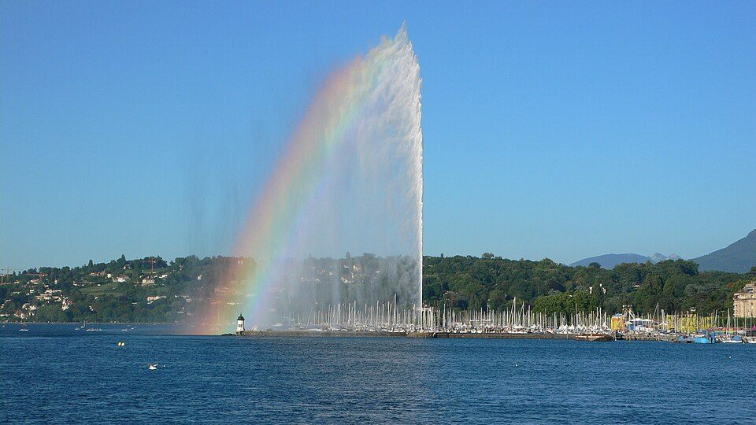
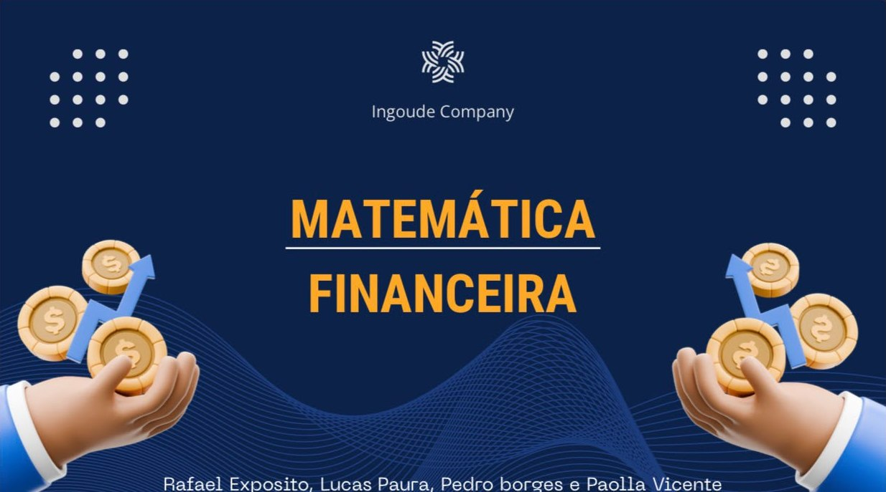

O que estudei
- Estatística e pesquisa com formulário
- Matemática financeira
- Análise combinatória e probabilidade
- Função do 1º grau e função exponencial
- Áreas de figuras planas e GeoGebra
Uma pesquisa estatística começa com uma pergunta. Depois vêm a coleta dos dados, as tabelas, os gráficos e só no fim a conclusão.
Na matemática financeira, a diferença entre juros simples e compostos parece pequena no começo. Com o tempo ela cresce, porque nos compostos existe juro sobre juro.
A análise combinatória conta possibilidades sem precisar escrever todas. A probabilidade usa essa contagem para medir a chance de algo acontecer.
A função do 1º grau forma uma reta no gráfico. A exponencial multiplica a cada passo, então a curva sobe ou desce muito rápido.
Em geometria, calculamos áreas de figuras planas. No GeoGebra dava para mudar os valores e ver o resultado na hora.
Atividades e trabalhos
Projeto "O que Dizem os Números"
- Aula 2: Caçadores de Dados
- Criação do formulário para a pesquisa
- Atividade estatística
- Criação do painel
Matemática Financeira e outros trabalhos
- Projeto "Matemática Financeira": situações reais de famílias
- Projeto de Matemática
- Lista de atividades: Probabilidade
- Projeto de Análise Combinatória (em grupo) e Lista 1
- Função exponencial: atividade remota e lista de exercícios
- Atividades no GeoGebra e tomada de decisão
- Plano Cartesiano e Função do 1º Grau
- Área de Figuras Geométricas
- Geometria em Ação (trabalho em grupo)
- Atividade integrada de Ciências da Natureza e Matemática
O projeto de Matemática Financeira usou situações de famílias para falar de orçamento. Foi em grupo e teve apresentação de slides.
"O que Dizem os Números" foi uma pesquisa completa, do formulário até o painel.
Evidências da aprendizagem
Capa da apresentação de Matemática Financeira.

Minha reflexão
É a matéria mais próxima da Administração. Orçamento, juros e gráfico são coisas que vou continuar usando.